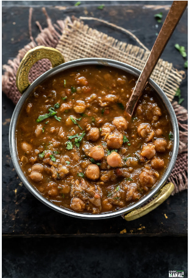

Preparation
Cooking Chickpeas
Firstly, rinse the chickpeas a few times in water.
Soak the dried chickpeas overnight in water or for 8 to 9 hours.
Drain all the water and rinse the chickpeas again once or twice.
Again drain the water and set aside.
Now you can cook the chickpeas in a 3 litre stovetop pressure cooker or Instant pot.
Add the soaked chickpeas, cinnamon, black cardamoms, cloves, tej patta, crushed ginger, dried gooseberry pieces, black salt or regular salt in the stovetop pressure cooker or in the steel insert of the Instant pot.
If you do not have dried gooseberry, then opt to use 1 tea bag or 1 teaspoon black tea powder or black tea leaves tightly wrapped in a muslin.
Add 3 cups water and give a stir.
For stovetop pressure cooker, cook the chickpeas on medium heat for 12 to 15 minutes or more if required.
For instant pot, pressure cook on high pressure mode for 25 to 30 minutes.
Whether you have cooked the chickpeas in the stovetop pressure cooker or Instant pot, wait for all the pressure to fall naturally.
Then only remove the lid.
The chickpeas have to be tender with a melt in the mouth texture.
Strain the chickpeas and reserve 1 cup stock together with the whole spices if you have used dried gooseberry.
If you have used tea leaves or tea powder, then discard the stock.
Making Onion Tomato Masala
In a heavy frying pan or wok, heat oil.
Add the finely chopped onions. Sauté onions stirring often until golden on medium-low heat.
Add the chopped tomatoes and chopped ginger and sauté the tomatoes till they become soft and mushy.
The oil should separate from the onion and tomato mixture.
Making Amritsari Chole
Add the cooked chickpeas and mix very well.
Add all the ground spice powders, stir and sauté for one to two minutes.
Now, add the strained chickpea stock or water, slit green chillies and salt as needed. Mix thoroughly.
Simmer on medium heat until the curry thickens a bit. Mash a few chickpeas so as to thicken the curry.
Check the salt and seasonings and add more if needed.
Serve Amritsari Chole hot garnished with ginger julienne and chopped coriander leaves with some bhatura, naan, roti, poori or steamed basmati rice.